Race screen — 2026-11-03 · updated 20:22
M2 P&L −£16.002 won, 8 lost · 1 to run · 11 not backed (price outside 3.5–8) · 2 non-runners
£2 per M2 priced 3.5–8 at the off (BSP; SP until BSP comes in next morning) · loser −£2 · winner £2 × (BSP − 1) less 5% commission · 2 winners not yet counted — BSP comes in tomorrow morning
Order: each race is in market order (shortest forecast price first). A gold
◆ 1/2/3 marks your data model's top 3 — a gold pick at a
longer price is where your data disagrees with the market (a value spot for your eye).
Badges by the name: M2 Market #2 — 2nd favourite in the morning forecast, qualifying race; back only if the live price is 3.5–8.0 ★ EYE finished last run strongly (+score) ⚠ hard trk easy→hard track step-up (−score) ▼ easy trk recently placed at much tougher track (+score) ⚠ draw badly drawn here (−score) ⚠ pace run-style fights the course pace bias (−score) ⚠ ground has tried this going but never placed on it (−score) ▼ cls dropping in class today (+score) ▲ cls rising in class today (−score) ▼ in money in vs opening show ▲ drift drifting vs opening show ⚠ 2 runs / IRE form too little / foreign form to read.
OR column: ↑ green arrow = BHA rating rising (improving horse); ↓ orange = rating falling. TF column: Timeform stars 1–5 (★★★★★ = top rated).
Suit column: going✓ / trip✓ / trk✓ (track toughness) / draw✓ (well drawn).
Rest: green Crse = won there; yellow comment = trouble in running; greyed = novice/bumper or non-handicap 5–6f sprint (left out of the tally — handicap sprints now shown at full opacity). Res fills in after racing (winner green; ✓ = winner came from the top-3 market rows, ◆ = one of your gold data picks won); Spd is a rough home figure; BSP fills in the next morning.
Badges by the name: M2 Market #2 — 2nd favourite in the morning forecast, qualifying race; back only if the live price is 3.5–8.0 ★ EYE finished last run strongly (+score) ⚠ hard trk easy→hard track step-up (−score) ▼ easy trk recently placed at much tougher track (+score) ⚠ draw badly drawn here (−score) ⚠ pace run-style fights the course pace bias (−score) ⚠ ground has tried this going but never placed on it (−score) ▼ cls dropping in class today (+score) ▲ cls rising in class today (−score) ▼ in money in vs opening show ▲ drift drifting vs opening show ⚠ 2 runs / IRE form too little / foreign form to read.
OR column: ↑ green arrow = BHA rating rising (improving horse); ↓ orange = rating falling. TF column: Timeform stars 1–5 (★★★★★ = top rated).
Suit column: going✓ / trip✓ / trk✓ (track toughness) / draw✓ (well drawn).
Rest: green Crse = won there; yellow comment = trouble in running; greyed = novice/bumper or non-handicap 5–6f sprint (left out of the tally — handicap sprints now shown at full opacity). Res fills in after racing (winner green; ✓ = winner came from the top-3 market rows, ◆ = one of your gold data picks won); Spd is a rough home figure; BSP fills in the next morning.
Winner in the market top 3: 14/20 (70%) · in your gold data top 3: 12/20 (60%) — greyed novice / sprint races excluded
| Res | Horse | Price | BSP | Dr | Form | Crse | Suit | OR | Spd | TF | Last comment |
|---|---|---|---|---|---|---|---|---|---|---|---|
| 2 |  Loriko ◆ 2 Loriko ◆ 2 | 1.83 | - | 1-2-1-1-3-6 | going✓ trip✓ trk✓ | 133 ↑ | 79 | ★★★★☆ | In touch in mid-division, lost place before 2 out, drifted right flat, kept on but no impr | ||
| 1 |  Un Sens A La Vie ◆ 1 M2 ▼ cls Un Sens A La Vie ◆ 1 M2 ▼ cls | 2.00 | - | 7-2-1-4-2-1 | going✓ trip✓ trk✓ | 133 | 73 | ★★★★★ | Took keen hold, prominent, led 3rd, pressed for lead before 2 out, pushed along and a leng |
⚠ limited form — likely skip
| Res | Horse | Price | BSP | Dr | Form | Crse | Suit | OR | Spd | TF | Last comment |
|---|---|---|---|---|---|---|---|---|---|---|---|
| 3 |  Changing Lanes ◆ 1 Changing Lanes ◆ 1 | 2.38 | - | 3-2-4 | going✓ | - | ★★★★☆ | Led, pushed along 2f out, ridden and joined 1 1/2f out, headed 1f out, no extra final furl | |||
| 2 |  Kelly Burn ◆ 3 ▼ cls Kelly Burn ◆ 3 ▼ cls | 3.00 | - | 2-1-5-1-1-8 | 80 | ★★★★★ | Wore hood to start, midfield, outpaced from over 3f out, weakened quickly and eased over 2 | ||||
| 5 |  Plan C ⚠ ground Plan C ⚠ ground | 6.50 | - | 3-2-5-10-3-6 | trk✓ | 88 | ★★★☆☆ | Towards rear, ridden over 2f out, plugged on inside final furlong, never nearer | |||
| 1 | 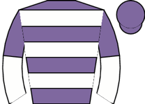 Thisonesforyou ◆ 2 ⚠ ground ▲ cls | 11.00 | - | 5-9-3-4-4-1 | trk✓ | 91 | ★★★★☆ | Went to post early wearing red hood, towards rear, pushed along and headway on outer 2f ou | |||
| 4 | 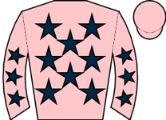 Wedonttellthetruth ▲ cls | 11.00 | - | 1-6-9-2-3-4 | trk✓ | 83 | ★★★☆☆ | Midfield, ridden over 2f out, headway over 1f out, kept on | |||
| 6 |  Karios ▲ cls Karios ▲ cls | 26.00 | - | 12-9-10-9-1 | going✓ | 88 | ★★☆☆☆ | Wore hood to post, held up in touch, smooth progress over 2f out, shaken up to lead over 1 | |||
| 7 |  Risk Averse Rebel ▲ cls Risk Averse Rebel ▲ cls | 34.00 | - | 3-3-2-8-3-7 | 86 | ★★☆☆☆ | Held up in rear, modest headway on outer 3f out, outpaced from over 1f out, weakened insid |
⚠ limited form — likely skip
| Res | Horse | Price | BSP | Dr | Form | Crse | Suit | OR | Spd | TF | Last comment |
|---|---|---|---|---|---|---|---|---|---|---|---|
| 1 |  Trigg ◆ 1 Trigg ◆ 1 | 2.62 | - | 1-2-2-1-3-1 | going✓ trk✓ | 123 | 58 | ★★★★★ | Close up, led 4th, forged on before 2 out, pushed along before last and went further clear | ||
| 3 |  One Knight ⚠ ground One Knight ⚠ ground | 3.00 | - | 11-1-1-14-3-- | 1r | trk✓ | 60 | ★★★★☆ | Midfield, stumbled on landing and unseated rider 4th | ||
| 2 |  Nightflyer ◆ 2 Nightflyer ◆ 2 | 4.50 | - | 4-19-5-2-1-2 | 1r | trip✓ trk✓ | 112 | 66 | ★★★☆☆ | Prominent, led 2nd, driven and headed 2 out, no chance with winner from last | |
| 0 | 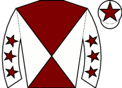 Old Clayesmorian ◆ 3 | 7.00 | - | 1-4-10 | 1r 1W | trk✓ | 66 | ★★☆☆☆ | Tracked leaders, niggled along and lost place 8f out, dropped to rear and struggling 6f ou | ||
| 4 | 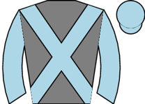 Winding Lake | 26.00 | - | unraced | - | ||||||
| 5 |  Georgie Simmons Georgie Simmons | 101.00 | - | unraced | - |
| Res | Horse | Price | BSP | Dr | Form | Crse | Suit | OR | Spd | TF | Last comment |
|---|---|---|---|---|---|---|---|---|---|---|---|
| 2 | 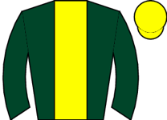 Lucy The Wire ◆ 2 ▼ cls | 3.25 | - | 2-4-5-7-1-1 | trip✓ trk✓ | 105 ↑ | 84 | ★★★★☆ | Held up in fourth, closed before 3 out, led 2 out, clear before last, easily | ||
| 4 |  Berry Edge ◆ 3 M2 ★ EYE Berry Edge ◆ 3 M2 ★ EYE | 3.75 | - | 5-3-1-3-2-1 | going✓ trip✓ trk✓ | 96 ↑ | 58 | ★★★★★ | Mid-division, smooth headway 3 out, disputed second 2 out and pushed along, ridden and led | ||
| 5 | 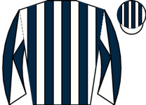 A Good Yomp ◆ 1 ★ EYE ▼ cls | 8.00 | - | 1-5-3-3-4-1 | 2r 1p | going✓ trk✓ | 99 | 72 | ★★☆☆☆ | Midfield, rapid headway to lead 3 out, not fluent 2 out, ridden after last, ran on well, a | |
| 1 |  Woodstock City Woodstock City | 8.00 | - | 1-6-2-9-2-3 | trk✓ | 99 ↑ | 77 | ★★★★☆ | Held up in midfield, not fluent 3 out, soon briefly ridden and headway, ridden to chase le | ||
| 6 | 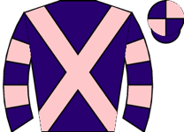 Crown Of India | 13.00 | - | 1-2-2-6-2-3 | going✓ trip✓ trk✓ | 94 | 53 | ★★★☆☆ | Prominent, lost ground after 2 out, weakened before last | ||
| 8 | 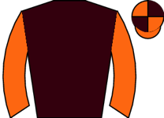 Blue Sky Dreaming | 13.00 | - | 5-4-4---4 | 100 | 66 | ★★★☆☆ | Tracked leaders, asked for effort before 3 out, went third after 2 out, lost third before | |||
| 10 |  Adba Adba | 13.00 | - | 7-5-6-5-1-5 | going✓ trk✓ | 101 ↑ | 47 | ★★☆☆☆ | Midfield, some headway 3 out, short of room 2 out, weakened before last | ||
| 7 | 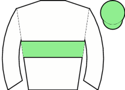 Gallant Lion | 15.00 | - | 11-1-4-8-4-6 | 100 | 85 | ★★★★☆ | Wore red hood to post, slowly into stride, soon mid-division, pushed along well over 2f ou | |||
| 9 |  Battle Of Omdurman Battle Of Omdurman | 26.00 | - | 4-3-3-3-6-5 | trk✓ | 89 ↓ | 53 | ★★☆☆☆ | Prominent, pushed along after 4 out, headway before 3 out, outpaced after 2 out, not fluen | ||
| 0 |  Prince Rhinegold Prince Rhinegold | 26.00 | - | 2-5-2-9-4-5 | going✓ | 73 | 60 | ★★☆☆☆ | In touch with leaders, not fluent 5th, chased leaders 3 out, outpaced 2 out, not fluent la | ||
| 3 | In This World ▼ cls | 34.00 | - | --5-5---2-4 | 1r | 93 ↓ | 64 | ★★☆☆☆ | Held up behind leaders, raced keenly, ridden after 3 out, not fluent 2 out, weakened quick |
| Res | Horse | Price | BSP | Dr | Form | Crse | Suit | OR | Spd | TF | Last comment |
|---|---|---|---|---|---|---|---|---|---|---|---|
| 0 |  Playful Fox ◆ 2 ▲ cls Playful Fox ◆ 2 ▲ cls | 1.67 | - | 1-2-1-5-5-1 | going✓ | 108 | 72 | ★★★★★ | In rear, hit 3rd, closed 4 out, pressed leader before 2 out, pushed along and led approach | ||
| 1 |  Court In A Storm ◆ 1 M2 ★ EYE Court In A Storm ◆ 1 M2 ★ EYE | 3.00 | - | 3-2-4-5---1 | going✓ trk✓ | 118 | 70 | ★★★★☆ | Prominent, pressed leader 4 out, led before 3 out, ridden before last, kept on gamely when | ||
| 2 | 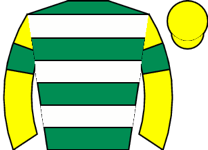 Ukantango ◆ 3 | 11.00 | - | 1-9-1-4-9-4 | 1r | going✓ trip✓ trk✓ | 111 ↑ | 62 | ★★☆☆☆ | Prominent, lost ground 9th, in rear next, never on terms thereafter | |
| 3 | 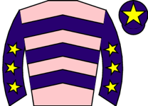 Coastguard Station ⚠ ground ▼ cls | 15.00 | - | 2-4-2-6-8-8 | trk✓ | 117 ↓ | 59 | ★★☆☆☆ | Always towards rear, tailed off from 4 out |
| Res | Horse | Price | BSP | Dr | Form | Crse | Suit | OR | Spd | TF | Last comment |
|---|---|---|---|---|---|---|---|---|---|---|---|
| 3 |  Bahtiyar ◆ 3 Bahtiyar ◆ 3 | 2.10 | - | 5-6-3-4-5-2 | 1r | 79 | 47 | ★★★★★ | Towards rear, headway 14th, closed on leader 3 out, led 2 out, pushed along to go clear be | ||
| 1 |  I Love You Sivola ◆ 2 M2 I Love You Sivola ◆ 2 M2 | 3.25 | - | 6-9---1-1-4 | trip✓ | 82 ↑ | 55 | ★★★★☆ | Tracked leaders, lost ground and pushed along after 4 out, plugged on | ||
| 2 | 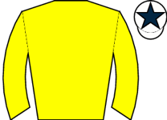 The Magus ◆ 1 | 3.50 | - | 3---6-2---- | trip✓ trk✓ | 98 | 58 | ★★☆☆☆ | Led, headed 3rd, slow 7th, not fluent 9th, mistake 10th, soon ridden in rear, pulled up be |
| Res | Horse | Price | BSP | Dr | Form | Crse | Suit | OR | Spd | TF | Last comment |
|---|---|---|---|---|---|---|---|---|---|---|---|
| 1 | Ballymoreen ◆ 3 ▲ cls | 3.25 | - | 4-1-6-4-2-1 | 1r | going✓ | 103 | 70 | ★★★★★ | Prominent, led after 5th, headed before next, soon led again, headed after 7th, led 3 out, | |
| 4 | 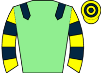 Kittys Glance ◆ 1 M2 ★ EYE | 4.50 | - | 1-2-3-2-2-1 | going✓ | 110 | 72 | ★★★☆☆ | Wore hood to post, took keen hold, held up in rear, headway to lead and ridden before 2 ou | ||
| 2 | 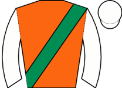 Katarcice ◆ 2 ★ EYE | 5.50 | - | 3-2-2-3-5-1 | going✓ trip✓ trk✓ | 108 | 58 | ★★★☆☆ | Soon raced in second, lost position after 5th, hampered by loose horse 7th, led on bend af | ||
| 0 |  Kentucky River ▼ cls Kentucky River ▼ cls | 7.00 | - | 8-7-1-9-1-12 | 1r 1W | going✓ trip✓ trk✓ | 111 ↓ | 73 | ★★★★☆ | Wore hood to post, held up in rear, ridden 4f out, minor headway over 1f out | |
| 3 | Electric Eddy ▲ cls | 8.00 | - | --3-6-6-4-5 | 88 ↓ | 64 | ★★★★☆ | In touch with leaders, ridden to chase leader bypassing usual 2 out, faded final furlong | |||
| 5 | 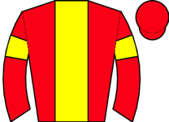 An Buachaill Rua ▲ cls | 11.00 | - | 5-6-5-1-2-- | 1r | trip✓ trk✓ | 93 ↑ | 74 | ★★★☆☆ | Midfield, pushed along after 9th, blundered and fell 3 out | |
| 6 |  So Proud ▼ cls So Proud ▼ cls | 13.00 | - | 1-5-4-3-2-11 | 1r | going✓ | 103 | 65 | ★★☆☆☆ | Midfield, closed on leaders after 4 out, outpaced approaching 3 out, soon weakened | |
| 7 |  Guardami Ancora Guardami Ancora | 26.00 | - | 2-2-6-2-3-11 | trk✓ | 108 | 61 | ★★☆☆☆ | Midfield, ridden and weakened 3 out | ||
| 0 |  Stavanger Rose ⚠ ground Stavanger Rose ⚠ ground | 51.00 | - | ----6-4-10-5 | 80 ↓ | 45 | ★☆☆☆☆ | Always in rear | |||
| 0 | The Tide Turns ⚠ ground | 151.00 | - | 5-10-----9-7 | 100 ↑ | 57 | ★☆☆☆☆ | Prominent, lost ground on bend before 3 out, soon dropped to last, lost touch before 2 out |
| Res | Horse | Price | BSP | Dr | Form | Crse | Suit | OR | Spd | TF | Last comment |
|---|---|---|---|---|---|---|---|---|---|---|---|
| 1 | 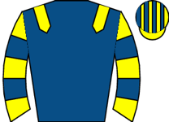 Jeteye ◆ 1 ▼ cls | 2.20 | - | 4-3-1-2-1-5 | 2r 1W | going✓ trip✓ trk✓ | 99 | 64 | ★★★★★ | Mid-division, slight mistake 15th, pushed along when not fluent next, no impression 2 out, | |
| 2 |  Luminaries ◆ 2 M2 ▼ easy trk Luminaries ◆ 2 M2 ▼ easy trk | 2.38 | - | 7-7-2-1-1-2 | 1r 1p | going✓ trk✓ | 82 | 64 | ★★★☆☆ | Close up, led 1st, forged away 4 out, shaken up before last where 6 lengths ahead, ridden | |
| 3 | 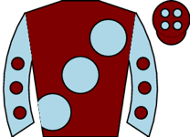 Puddlesinthepark ▼ cls | 7.00 | - | 9---6-5-6-- | 105 ↓ | 63 | ★★★☆☆ | Midfield, headway 9th, not fluent 4 out, lost position before 3 out, soon pulled up | |||
| 4 | 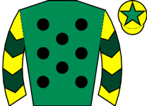 Lights Are Green ◆ 3 | 13.00 | - | --3---4-5-- | 1r | trk✓ | 78 ↓ | 66 | ★★☆☆☆ | Prominent, led 3rd, headed 6th, lost second 3 out, weakened from 2 out |
| Res | Horse | Price | BSP | Dr | Form | Crse | Suit | OR | Spd | TF | Last comment |
|---|---|---|---|---|---|---|---|---|---|---|---|
| 3 |  Moment Of Light ◆ 1 ▼ easy trk ▼ cls Moment Of Light ◆ 1 ▼ easy trk ▼ cls | 1.22 | - | 1-1-4-9-1-2 | going✓ trip✓ trk✓ | 114 ↑ | 69 | ★★★★★ | Took keen hold, led but pestered, ridden and a length clear 2 out, maintained advantage ap | ||
| 1 |  Jambearee M2 ▼ easy trk Jambearee M2 ▼ easy trk | 4.00 | - | 8-7-6-5-3-2 | trk✓ | 99 | 52 | ★★★☆☆ | Mid-division, closed up after 3rd and soon led, jumped right 4 out, pushed along 2 out and | ||
| 7 | 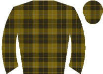 Al Qatem ◆ 2 ▼ cls | 51.00 | - | 8-6 | 79 | Wore red hood to post, ran green throughout, chased leaders, cajoled along 6f out, lost po | |||||
| 5 | 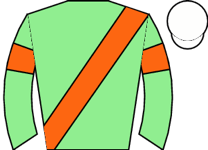 Gwen's Girl ◆ 3 ▲ cls | 51.00 | - | 4-7-6-6-5-8 | 85 | ★★☆☆☆ | Midfield, pushed along 3f out, ridden and hung right 2f out, never involved | ||||
| 6 |  Captain Bruce ⚠ ground Captain Bruce ⚠ ground | 51.00 | - | 9-8-8-6-8-6 | 70 | ★★☆☆☆ | Towards rear, struggling after 4 out | ||||
| 4 | 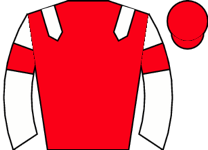 Contemplation | 67.00 | - | 4-4-6-8-9-4 | 67 | ★☆☆☆☆ | Held up towards rear, pushed along after 3 out, kept on and took remote fourth before 2 ou | ||||
| 2 |  Flawless Fusion ⚠ ground Flawless Fusion ⚠ ground | 67.00 | - | 2-4-10-6-5-- | 72 | ★☆☆☆☆ | Midfield, pushed along 3 out, outpaced by leading trio before 2 out, tired when fell last | ||||
| 8 | Two Steppin | 151.00 | - | --- | 59 | Wore hood to post, midfield, bumped 2nd, ridden in rear before 5th, tailed off when pulled |
⚠ limited form — likely skip
| Res | Horse | Price | BSP | Dr | Form | Crse | Suit | OR | Spd | TF | Last comment |
|---|---|---|---|---|---|---|---|---|---|---|---|
| 1 | Roxy Russet ◆ 2 | 3.00 | - | 7---2-13-2 | trk✓ | 68 | ★★★★☆ | Chased leaders, went second after 3 out, led and tried to kick for home before 2 out, join | |||
| 2 | 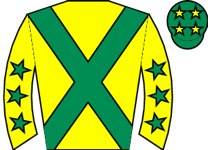 Another Classic | 3.50 | - | unraced | - | ||||||
| 0 |  Midnight Bella ◆ 1 ▼ easy trk ▲ cls Midnight Bella ◆ 1 ▼ easy trk ▲ cls | 4.50 | - | 5-8-11-6-9-2 | trip✓ trk✓ | 91 | 67 | ★★★☆☆ | Led, headed and remained prominent after 4th, led again after 6th, shaken up before 2 out, | ||
| 3 | Letmeseethecolts ◆ 3 | 4.50 | - | 7-7-2-3-3-4 | trk✓ | 95 ↑ | 51 | ★★★☆☆ | Held up in rear, hit 6th, not fluent next, outpaced 3 out and beaten | ||
| 4 |  Yanka Blue ▲ cls Yanka Blue ▲ cls | 21.00 | - | 7---4-4-3-9 | 3r | trk✓ | 76 | 60 | ★☆☆☆☆ | Held up in rear, some headway 2 out, soon weakened |
| Res | Horse | Price | BSP | Dr | Form | Crse | Suit | OR | Spd | TF | Last comment |
|---|---|---|---|---|---|---|---|---|---|---|---|
| 0 |  Treaty Boy ◆ 2 ▼ easy trk Treaty Boy ◆ 2 ▼ easy trk | 2.62 | - | 4-3-5-4-4-1 | 1r | going✓ trk✓ | 93 ↓ | 69 | ★★★★★ | Tracked front pair, went second 7th, led before 4 out, forged on after 3 out, drew clear b | |
| 5 |  Prospect House ◆ 1 M2 ▼ easy trk Prospect House ◆ 1 M2 ▼ easy trk | 6.50 | - | 1-4-3-3-1-5 | going✓ trip✓ trk✓ | 93 | 75 | ★★★★☆ | |||
| 1 |  Applejack Poet Applejack Poet | 8.00 | - | --8---3-3-2 | 2r | trk✓ | 78 ↓ | 59 | ★★★☆☆ | Held up in rear early, headway and took second after 3rd, pushed along to close on leader | |
| 7 | 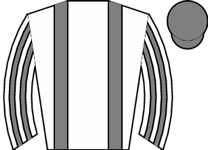 Getaway Jewel ◆ 3 | 9.00 | - | 3-2-2-1-4-4 | 1r | going✓ trip✓ trk✓ | 78 ↑ | 76 | ★★☆☆☆ | Prominent, ridden and slightly hampered 2 out, soon weakened | |
| 2 |  Clean Getaway Clean Getaway | 9.00 | - | 3-4-5-3-1-5 | 4r 1W | going✓ trip✓ trk✓ | 85 ↓ | 59 | ★★★☆☆ | Mid-division, hit 4th, mistake and blundered 3 out, pushed along 2 out and weakened | |
| 6 | 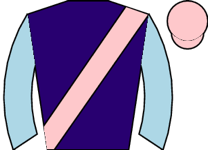 Natural Ability | 9.00 | - | 5-3-2---7-1 | 4r 1W | going✓ trip✓ trk✓ | 85 ↓ | 51 | ★★★☆☆ | Prominent, led narrowly after 2 out, ridden and strongly challenged run-in, stayed on game | |
| 3 | Langton Wold ⚠ ground | 11.00 | - | 7-8-11-5-4-- | 1r | 92 ↑ | 71 | ★★★☆☆ | |||
| 4 |  Huit Reflets Huit Reflets | 11.00 | - | 9-4-2-6-7-6 | 1r | going✓ trk✓ | 83 | 61 | ★★☆☆☆ | Chased leaders on inside, not fluent 4th, outpaced when not fluent last, weakened flat |
| Res | Horse | Price | BSP | Dr | Form | Crse | Suit | OR | Spd | TF | Last comment |
|---|---|---|---|---|---|---|---|---|---|---|---|
| 4 | 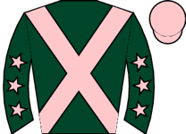 Cadillac Ranch ◆ 1 | 4.00 | - | --1-5-2-3 | 3r 1W | going✓ trip✓ trk✓ | 100 | 56 | ★★★★☆ | Chased leaders, led before 3rd, untidy 5th, headed narrowly after 2 out, battled on, not f | |
| 2 | 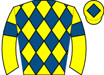 Elemental Eye M2 | 4.50 | - | 1-2-7-8-1-8 | going✓ trk✓ | 96 | 68 | ★★★★★ | Dwelt, in rear, ridden well over 1f out, never involved | ||
| 1 |  Character Testing ◆ 2 ▼ easy trk Character Testing ◆ 2 ▼ easy trk | 5.50 | - | 2-7-2-4-4-2 | 3r 1p | trip✓ trk✓ | 92 ↑ | 56 | ★★★☆☆ | Prominent, soon raced in second, hit 5th, chased winner from 2 out, kept on bit no further | |
| 5 | 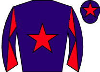 Snapaudaciaheros ▼ easy trk | 7.00 | - | 5-1---1-7-3 | going✓ trk✓ | 85 ↑ | 56 | ★★★★☆ | Often jumped right, in touch in mid-division, headway before last, went third towards fini | ||
| 7 | 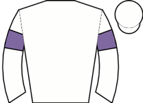 Grand Scheme | 7.00 | - | 6-6-5-5-1-4 | 1r | trk✓ | 82 ↑ | 63 | ★★★☆☆ | Mid-division, not fluent 2 out and pushed along, kept on to dispute 3rd before last where | |
| 3 | Gintime ◆ 3 ▼ cls | 13.00 | - | 4-4-1-9-5-8 | 2r 1W | trip✓ trk✓ | 100 | 60 | ★★★☆☆ | Wore hood to post, held up in rear, not fluent 4th, in touch 2 out, soon ridden, weakened | |
| 6 |  Mr Globalist Mr Globalist | 13.00 | - | 3-4-8-3-6-5 | 3r 1p | trk✓ | 72 | 63 | ★★☆☆☆ | Handy, hit 2nd, weakened quickly 4 out | |
| 9 | Kaikoura ⚠ ground ▼ cls | 15.00 | - | 3-10-7-5-4-6 | 95 | 62 | ★★★☆☆ | Held up in rear, tailed off from 3 out | |||
| 8 |  Tracker Issue Tracker Issue | 21.00 | - | 6-6-2-9-5-10 | 3r 1p | trk✓ | 91 | 53 | ★★☆☆☆ | Always towards rear, well beaten after 2 out | |
| 0 | 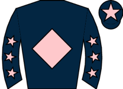 Plane Sailing | 67.00 | - | 8-----7-- | 85 | 70 | ★★☆☆☆ | Towards rear, tailed off before 3 out, pulled up after 2 out | |||
| 0 | 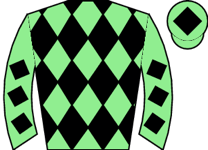 Chicago Storm ⚠ ground | 151.00 | - | 1-6-3---11-13 | trk✓ | 92 ↑ | 52 | ★★☆☆☆ | Rear of midfield, dropped to last after 3 out, soon lost touch |
⚠ limited form — likely skip
| Res | Horse | Price | BSP | Dr | Form | Crse | Suit | OR | Spd | TF | Last comment |
|---|---|---|---|---|---|---|---|---|---|---|---|
| 4 | 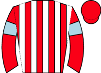 Curious Mrs Fox ◆ 1 | 1.67 | - | 6-4-2-3-2-2 | 2r 2p | going✓ trip✓ trk✓ | 86 | 55 | ★★★★★ | Mid-division, closer after 3 out, went third 2 out, pushed along before last, pressed lead | |
| 10 | 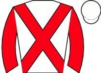 Slievehill ◆ 3 ▼ easy trk ⚠ ground | 7.00 | - | 4-4-5-11---3 | trk✓ | 90 | 43 | ★★★☆☆ | Led, headed after 3 out, well held after 2 out | ||
| 6 |  American Empire ⚠ ground American Empire ⚠ ground | 9.00 | - | 3-3-7-5-8-9 | 2r | trk✓ | 85 ↓ | 54 | ★★☆☆☆ | Prominent, lost ground and ridden 3 out, weakened tamely | |
| 1 |  Luckie Devil ⚠ ground Luckie Devil ⚠ ground | 15.00 | - | 4-------9-7 | 70 | 50 | ★★☆☆☆ | Midfield, ridden and weakened 2 out | |||
| 2 | 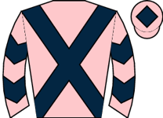 Charles Morin | 17.00 | - | 11-1-4-3-5-8 | trk✓ | 76 ↑ | 71 | ★★☆☆☆ | Mid-division, slightly hampered 1st, weakened before 2 out | ||
| 0 | Rock Armour ◆ 2 ▼ cls | 21.00 | - | 6-12-5-3---3 | 3r 2p | trk✓ | 88 | 52 | ★★★☆☆ | Chased front pair, not fluent 4th, awkward next, lost touch 3 out | |
| 9 |  Art Dancer ▼ cls Art Dancer ▼ cls | 21.00 | - | 3-3-12---8-7 | 3r 2p | trk✓ | 77 | 57 | ★★★☆☆ | Tracked leaders, reminders after 2nd, lost position 3 out and tailed off | |
| 5 | 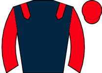 Credit Union ⚠ ground ▼ cls | 21.00 | - | 10-14-10-10-6-6 | 1r | 81 | 47 | ★★☆☆☆ | Held up in rear, three lengths detached after 1st, pushed along after 4th, outpaced after | ||
| 3 | Brave Move ⚠ ground | 21.00 | - | 7-3-5-8---- | trk✓ | 80 ↓ | 54 | ★★★★☆ | Midfield, outpaced and struggling 3 out, weakened quickly after 2 out, pulled up before la | ||
| 8 | 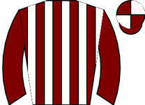 Lynxman ▼ cls | 26.00 | - | 4-7-8-5-4-5 | 78 | 47 | ★★☆☆☆ | Front mid-division, pushed along after 4 out, weakened 2 out | |||
| 7 | 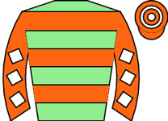 Autumn Getaway ⚠ ground | 51.00 | - | 8-6-7-5-5-- | 69 | 53 | ★★☆☆☆ | Always behind, clipped heels before 3 out, pulled up before 2 out |
⚠ limited form — likely skip
| Res | Horse | Price | BSP | Dr | Form | Crse | Suit | OR | Spd | TF | Last comment |
|---|---|---|---|---|---|---|---|---|---|---|---|
| 5 | 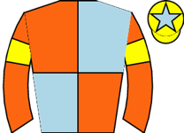 Burk Flight ◆ 2 | 2.00 | - | unraced | - | ||||||
| 0 | Unbroken Spirit | 4.50 | - | unraced | - | ||||||
| 6 | 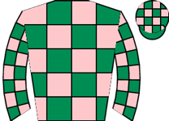 Templar Knight | 6.00 | - | unraced | - | ||||||
| 3 | 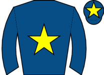 Cheese ◆ 1 | 6.50 | - | 6 | 56 | Midfield, pushed along and lost place over 3f out, soon well beaten | |||||
| 0 | 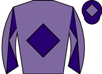 Jack Dandy ◆ 3 | 11.00 | - | unraced | - | ||||||
| 4 |  Head Office Head Office | 12.00 | - | unraced | - | ||||||
| 2 |  Powerful Act Powerful Act | 17.00 | - | unraced | - | ||||||
| 7 |  Pinch Of Salt Pinch Of Salt | 17.00 | - | unraced | - | ||||||
| 1 | Moves Like Gold | 21.00 | - | unraced | - | ||||||
| 8 |  Thunderous Sea Thunderous Sea | 51.00 | - | 8-6 | 43 | Prominent, pushed along before halfway, outpaced and weakened quickly over 4f out, tailed |
⚠ limited form — likely skip
| Res | Horse | Price | BSP | Dr | Form | Crse | Suit | OR | Spd | TF | Last comment |
|---|---|---|---|---|---|---|---|---|---|---|---|
| 1 |  The Perfect Poet ⚠ ground ▼ cls The Perfect Poet ⚠ ground ▼ cls | 3.00 | - | 1-16 | 69 | In touch with leaders, pushed along over 3f out, outpaced over 2f out, soon weakened, tail | |||||
| 3 |  Analogical ◆ 2 Analogical ◆ 2 | 5.50 | - | 1-3-1-6-10-3 | going✓ trk✓ | 68 | ★★★★★ | Prominent, slow jump 2nd, not fluent 3 out and pushed along, stayed on same pace | |||
| 6 |  Ballyboy Prince Ballyboy Prince | 7.00 | - | unraced | - | ||||||
| 2 | 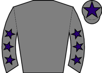 Raulin ◆ 1 | 8.00 | - | 6-2-3-1-7-2 | trip✓ | 84 | ★★★☆☆ | Not always fluent, disputed lead, not fluent and headed 3 out, ridden before 2 out, soon o | |||
| 8 |  Lady Boujee Lady Boujee | 11.00 | - | 2-6-5-6 | going✓ trk✓ | 69 | ★★★☆☆ | Towards rear, pushed along before 2 out, never on terms | |||
| 4 | 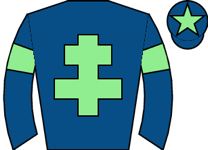 Jaycee Reidy ⚠ hard trk | 11.00 | - | 5 | 50 | Soon raced in close second, pushed along when disputed lead 2 out, ridden and weakened qui | |||||
| 10 | 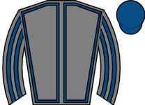 Soldier Poet ▲ cls | 13.00 | - | 2-5-4 | 47 | ★★★☆☆ | Raced in fourth, pushed along into third over 3f out, lost third 2f out, soon weakened | ||||
| 9 | 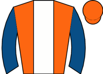 Mick The Yank ⚠ hard trk | 15.00 | - | 5 | 66 | In touch with leaders, ridden and lost position 3f out, minor headway 2f out | |||||
| 0 | 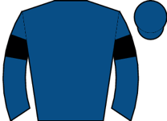 Boston Run ▲ cls | 17.00 | - | 6-4-2-1-5-7 | 4r 1W | trk✓ | 93 | ★★★☆☆ | Mid-division, ridden over 2f out, headway to chase leaders over 1f out, weakened inside fi | ||
| 5 | Our Amigo | 21.00 | - | 3-5-6 | 1r | 51 | ★★★☆☆ | Midfield, mistake and lost place 9th, soon dropped to last, tailed off | |||
| 7 |  Alfred Spero ◆ 3 Alfred Spero ◆ 3 | 101.00 | - | 9-3-5-2-1-6 | trk✓ | 62 | ★☆☆☆☆ | Towards rear, some headway after 3 out, not fluent 2 out, hit last, weakened run-in |
| Res | Horse | Price | BSP | Dr | Form | Crse | Suit | OR | Spd | TF | Last comment |
|---|---|---|---|---|---|---|---|---|---|---|---|
| 4 | 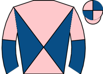 Everest ◆ 1 ▲ cls | 5.00 | - | 3-1-7-2-4-2 | 3r 1W | going✓ trip✓ trk✓ | 88 | 84 | ★★★★☆ | Rear mid-division, improved halfway to dispute fourth, tracked leader under 4f out, ridden | |
| 6 | 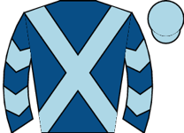 Poets Pearl M2 ⚠ ground ▼ cls | 5.50 | - | 5-5-7 | 81 | 42 | ★★★☆☆ | Midfield, shaken up before 3 out, soon faded | |||
| 2 |  Lets Go Mo ⚠ ground ▼ cls Lets Go Mo ⚠ ground ▼ cls | 7.00 | - | 8-6-6-5-4 | 83 | 62 | ★★★☆☆ | Towards rear, not fluent 4th, took modest third after 3 out, weakened before last | |||
| 1 | 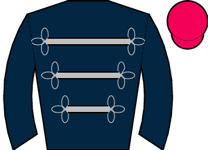 Chosen Hero ⚠ ground | 7.00 | - | 6-8-9------ | 79 ↓ | 63 | ★★★★★ | Midfield, dropped to rear and struggling after 7th, detached 3 out, pulled up before 2 out | |||
| 8 | 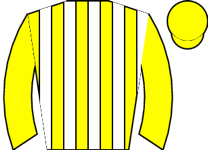 Ashpriors ⚠ ground ▼ cls | 8.00 | - | 10-7-- | 84 | 43 | ★★★★☆ | Towards rear, some headway after 3 out, no chance when fell 2 out | |||
| 7 | 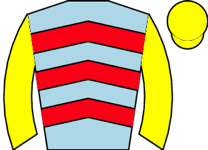 Little Lady Lucy ◆ 2 | 9.00 | - | ----1-1-2-9 | trip✓ trk✓ | 86 ↑ | 64 | ★★★★☆ | In touch with leaders, ridden before 2 out, lost position before last, no impression run-i | ||
| 3 | Suzy Wood ⚠ ground | 9.00 | - | 11-7---3-7-5 | 82 | 58 | ★★★☆☆ | Raced in fourth, went third 2 out, soon ridden, plugged on run-in, lost two places final s | |||
| 5 | Daring To Dream | 11.00 | - | 3-6-8-4-4-3 | 77 ↓ | 69 | ★★★☆☆ | In rear, not fluent 3rd, closed after 4 out, pushed along in third 2 out, stayed on one pa | |||
| 9 | Sadies Diamond ◆ 3 | 13.00 | - | 7-8-2-8-3-5 | trip✓ | 77 ↓ | 80 | ★★★☆☆ | Prominent behind clear leader, pushed along after 2 out, weakened last |
| Res | Horse | Price | BSP | Dr | Form | Crse | Suit | OR | Spd | TF | Last comment |
|---|---|---|---|---|---|---|---|---|---|---|---|
| 8 |  Touquet ◆ 1 M2 Touquet ◆ 1 M2 | 5.50 | - | 4-3-1-1-2-2 | 1r 1p | trip✓ trk✓ | 108 ↑ | 71 | ★★★☆☆ | Raced keenly, led 1st, went clear after 5th, reduced lead before 5 out, hit 4 out, soon he | |
| 3 | Away For The Night ◆ 2 M2 ▲ cls | 5.50 | - | 7-5-2-1-2-1 | going✓ trip✓ trk✓ | 103 | 78 | ★★★★☆ | Chased clear leader, closed 8th, led before 3 out, not fluent and headed 2 out, led again | ||
| 6 | Anariza M2 | 5.50 | - | --1-3-5-9-3 | trip✓ trk✓ | 109 | 65 | ★★★☆☆ | Towards rear, mid-division 3rd, pushed along and improved into third home turn before last | ||
| 1 | Superstylin ◆ 3 ▲ cls | 6.50 | - | 2-1-2-1-2-2 | 1r 1p | going✓ trip✓ trk✓ | 106 | 70 | ★★★★☆ | Wore hood to post, midfield, smooth progress after 3 out, shaken up before bypassing 2 out | |
| 5 | Vivre Le Reve | 6.50 | - | 1-9---4 | 107 | 50 | ★★★★★ | In touch, pushed along after 3 out, steady headway from 2 out, went remote fourth flat, ke | |||
| 4 | Reteti ▲ cls | 7.00 | - | 2-3-2-1-3-3 | trip✓ | 104 ↑ | 70 | ★★★☆☆ | Mid-division, went third 6th, pushed along before 2 out, and lost place, stayed on before | ||
| 2 |  Myrighthandman ⚠ ground ▲ cls Myrighthandman ⚠ ground ▲ cls | 9.00 | - | 5-3-2-4-8-5 | trip✓ trk✓ | 101 | 69 | ★★★☆☆ | Chased leaders, lost position 6th, towards rear, pushed along after 3 out, weakened 2 out | ||
| 0 |  Granny Hawkins Granny Hawkins | 13.00 | - | 1-1-1-3-5-5 | going✓ trip✓ trk✓ | 108 ↑ | 59 | ★★☆☆☆ | Towards rear, headway after 3 out, not fluent 2 out, ridden before last, weakened quickly | ||
| 7 | Poncho | 17.00 | - | 9-1-1-11---10 | going✓ trip✓ | 100 ↓ | 79 | ★★☆☆☆ | Raced in last, always towards rear |
| Res | Horse | Price | BSP | Dr | Form | Crse | Suit | OR | Spd | TF | Last comment |
|---|---|---|---|---|---|---|---|---|---|---|---|
| 3 | Market House ◆ 3 | 4.00 | - | 6-4-2-3-5-4 | trip✓ | 97 ↑ | 72 | ★★★★☆ | Towards rear, not fluent 4th, pushed along after 3 out and closed, not fluent 2 out and fo | ||
| 1 | Cooler Than Me ◆ 1 M2 ▼ cls | 4.50 | - | 8-10-1-1-2-3 | going✓ trip✓ trk✓ | 93 ↑ | 66 | ★★★★☆ | Midfield, not fluent 7th, made headway on outer after 9th, pressed leader after 3 out, sha | ||
| 2 | Gone In Sixty | 6.00 | - | 4-3-4-1-5-5 | 80 | 63 | ★★★☆☆ | Prominent, went right 11th, lost ground 14th, lost touch after 2 out | |||
| 5 | Just Aidan | 7.00 | - | --7---1-5-3 | trk✓ | 84 | 73 | ★★★☆☆ | Chased leaders, shaken up after 4 out, pushed along next, ridden along before 2 out, kept | ||
| 0 | Mymilkman ▼ cls | 7.00 | - | 6-----4 | 1r | 93 | 54 | ★★★☆☆ | Raced in fourth, niggled along before 9th, ridden after 3 out, no impression from 2 out | ||
| 4 | Calshot Spit ◆ 2 ⚠ hard trk ▲ cls | 8.00 | - | 1---4-3-9-2 | 99 ↓ | 76 | ★★★★★ | Led early, headed after 4f, ridden 3f out, led again 2f out, headed over 1f out, kept on s | |||
| 0 |  Jet Steel ▼ cls Jet Steel ▼ cls | 17.00 | - | 4-3---6-9 | 93 | 55 | ★★★☆☆ | Always towards rear | |||
| 6 | Begin The Luck | 17.00 | - | 5-1-2-3-8-7 | trip✓ | 94 ↓ | 52 | ★★☆☆☆ | Wore hood to post and taken down early, prominent, dropped to midfield after 5th, hampered | ||
| 7 | Gold Souk ▼ cls | 51.00 | - | 5-2-7-11-8-- | trk✓ | 84 ↑ | 69 | ★☆☆☆☆ | Always in rear, pulled up before 3 out | ||
| 8 | Brave Jen | 51.00 | - | 2-1-8-5-5-9 | going✓ trk✓ | 90 ↓ | 50 | ★☆☆☆☆ | Always behind |
| Res | Horse | Price | BSP | Dr | Form | Crse | Suit | OR | Spd | TF | Last comment |
|---|---|---|---|---|---|---|---|---|---|---|---|
| 1 |  Onewayortother Onewayortother | 3.25 | - | 3-3-3-6-10-3 | 100 ↓ | 49 | ★★★★☆ | Led to 2nd, prominent when not fluent 5th, shaken up before 3 out, ridden 2 out, every cha | |||
| 3 | A Great Excuse ◆ 1 M2 ▼ cls | 4.50 | - | 5-4-1---3-3 | 1r 1W | trk✓ | 100 | 76 | ★★★★★ | Led to 1st, soon headed, raced in second, pushed along 4 out, dropped to last before 3 out | |
| 2 | Mersey Street ◆ 3 | 6.00 | - | --1-2-7-1-6 | going✓ trip✓ | 91 ↑ | 50 | ★★★☆☆ | Led, not fluent 5th, soon went five lengths clear, reduced lead and not fluent 13th, bad m | ||
| 4 | Helios Allen | 6.00 | - | 9-6-5-2-2-3 | going✓ trip✓ trk✓ | 74 ↓ | 58 | ★★★★☆ | Chased leaders, went third before 2 out, no extra from last | ||
| 6 | Oblemenko ▼ cls | 7.00 | - | 4-6-11 | 84 | 54 | ★★★☆☆ | Took keen hold, always behind | |||
| 5 | Hello Fortune ▼ cls | 13.00 | - | 2-9-4-12 | 3r 1p | trip✓ trk✓ | 96 | 40 | ★★★☆☆ | Towards rear, some headway after 3 out, ridden before 2 out, soon outpaced, tired jump las | |
| 7 | Ballywood ◆ 2 | 15.00 | - | 6-7-3-2-3-5 | going✓ | 79 ↓ | 73 | ★★★☆☆ | Led, ridden before 3 out where headed, weakened last |
| Res | Horse | Price | BSP | Dr | Form | Crse | Suit | OR | Spd | TF | Last comment |
|---|---|---|---|---|---|---|---|---|---|---|---|
| 1 |  Mini Mac ◆ 1 ★ EYE ⚠ draw Mini Mac ◆ 1 ★ EYE ⚠ draw | 3.25 | - | 10 | 4-2-11-4-1-1 | 1r 1W | going✓ trip✓ trk✓ | 50 | 94 | ★★★★★ | Wore hood to post, towards rear, ridden over 2f out, kept on and headway to lead over 1f o |
| 2 | Rovinia ◆ 2 M2 | 6.50 | - | 8 | 2-2-1-3-5-3 | 1r | going✓ trip✓ draw✓ | 51 | 94 | ★★★★☆ | Handy on inner, pushed along over 2f out, stayed on, no impression final furlong |
| 9 | Superstorm ⚠ draw | 8.00 | - | 9 | 6-4-1-2-4-6 | trip✓ | 53 | 90 | ★★★☆☆ | Midfield, ridden and headway over 2f out, outpaced over 1f out, kept on same pace inside f | |
| 6 | Luna Beaux ⚠ ground | 8.00 | - | 4 | 5-9-4-4-5-4 | 54 ↓ | 90 | ★★★☆☆ | Held up in rear, ridden over 2f out, minor headway inside final furlong | ||
| 4 | Cuban Fiesta ◆ 3 | 9.00 | - | 6 | 10-2-7-1-3-6 | 2r 1p | going✓ trip✓ trk✓ draw✓ | 50 | 94 | ★★★☆☆ | Led, ridden along over 2f out, drifted right over 1f out, edged left when headed inside fi |
| 5 | Bungle Bay | 11.00 | - | 2 | 8-2-2-4-3-8 | 4r 3p | going✓ trip✓ trk✓ | 48 | 95 | ★★★☆☆ | Close up tracking leaders, ridden over 2f out, weakened inside final furlong |
| 0 | Men Of Honour ⚠ draw ⚠ ground | 11.00 | - | 12 | 9-5-7-7-8-5 | 52 ↓ | 89 | ★★☆☆☆ | Went to post early, tracked front pair, led 2f out and pushed along, ridden over 1f out, h | ||
| 0 | Ramon Di Loria ⚠ draw | 15.00 | - | 11 | 6-3-3-2-6-8 | trip✓ trk✓ | 55 | 93 | ★★☆☆☆ | In touch with leaders, outpaced and lost ground over 1f out, weakened inside final 110yds | |
| 7 |  Elias Escape ⚠ ground Elias Escape ⚠ ground | 15.00 | - | 7 | 5-8-8-3-9 | 1r 1p | trk✓ draw✓ | 52 | 91 | ★★☆☆☆ | Mid-division, pushed along and outpaced over 2f out, soon behind |
| 3 | King David ⚠ ground | 21.00 | - | 3 | 9-5-2-2-5-10 | 1r | 53 | 86 | ★★☆☆☆ | Bumped start and slowly away, in rear, taken wide 3f out, outpaced over 1f out, soon weake | |
| 10 |  Lihou Lady ⚠ ground Lihou Lady ⚠ ground | 26.00 | - | 1 | 6-6-7-4-8 | 50 | 89 | ★★☆☆☆ | Towards rear, never involved | ||
| 8 | Havana Halo | 34.00 | - | 5 | 11-6-2-7-8-11 | draw✓ | 55 ↓ | 89 | ★★☆☆☆ | Disputed lead early, chased leaders, effort over 2f out, weakened over 1f out |
| Res | Horse | Price | BSP | Dr | Form | Crse | Suit | OR | Spd | TF | Last comment |
|---|---|---|---|---|---|---|---|---|---|---|---|
| 1 |  Oppenheimer ★ EYE ⚠ draw ⚠ IRE form Oppenheimer ★ EYE ⚠ draw ⚠ IRE form | 2.50 | - | 11 | 7-4-12-10-3-1 | going✓ trk✓ | 54 ↓ | 95 | ★★★★★ | Wore hood to post, made all, ridden over 1f out, ran on well | |
| 0 | Sonbelievable M2 ⚠ draw | 6.00 | - | 9 | 7-9-8-3-2 | 2r | going✓ trip✓ trk✓ | 53 | 89 | ★★★★☆ | Midfield, ridden and headway over 2f out, not clear run and switched right over 1f out, ra |
| 2 | Barry The Worm ◆ 2 ★ EYE | 6.50 | - | 5 | 8-5-6-1-4-2 | 2r 1W | going✓ trip✓ trk✓ draw✓ | 53 | 93 | ★★★☆☆ | Held up towards rear, switched right and ridden over 1f out, ran on strongly final furlong |
| 3 | Snooze Lane ◆ 1 ★ EYE | 9.00 | - | 7 | 9-8-2-3-3-2 | 6r 4p | going✓ trip✓ trk✓ draw✓ | 51 ↓ | 94 | ★★★☆☆ | Held up in rear, pushed along over 2f out, plenty to do when ridden over 1f out, stayed on |
| 9 | Amaysmont ⚠ draw ⚠ ground | 11.00 | - | 12 | 8-19-3-8-2-4 | 2r | trk✓ | 55 | 94 | ★★★☆☆ | Held up in rear, headway 2f out, soon ridden, went third entering final furlong, kept on b |
| 4 | Create ◆ 3 | 13.00 | - | 2 | 7-1-11-7-3-2 | 3r 2p | going✓ trip✓ trk✓ | 50 | 93 | ★★★☆☆ | Bumped and short of room start, held up in rear of mid-division, pushed along over 2f out, |
| 5 | Oh So Perfect | 13.00 | - | 8 | 1-2-4-6-5-5 | 2r 1p | going✓ trip✓ trk✓ draw✓ | 54 | 91 | ★★★☆☆ | Wore hood and went early to post, midfield, shaken up over 3f out, soon kept on, headway i |
| 10 | Tortola ★ EYE ⚠ ground | 21.00 | - | 3 | 12-2-13-7-8-4 | 2r | 48 ↓ | 92 | ★★★☆☆ | Bumped start, mid-division, switched outside final bend, stayed on inside final 110 yards | |
| 8 | Alice's Influence ⚠ ground | 26.00 | - | 1 | 4-3-4-5-4-7 | trk✓ | 49 | 91 | ★★☆☆☆ | In rear, pushed along 3f out, plugged on, never in contention | |
| 11 | Groundsman ⚠ draw | 26.00 | - | 10 | 6-3-8-5-8-9 | 1r 1p | trk✓ | 54 ↓ | 88 | ★★☆☆☆ | Went right and bumped start, in touch with leader, disputed lead after 2f, ridden and head |
| 6 | Romanovich | 34.00 | - | 6 | 6-3-5-7-10-5 | 2r | trk✓ draw✓ | 51 ↓ | 91 | ★★☆☆☆ | Midfield, ridden and headway over 2f out, plugged on same pace inside final furlong |
| 7 | So Chic | 67.00 | - | 4 | 5-4-6-2-11-8 | 4r 1p | going✓ trip✓ trk✓ | 49 | 91 | ★★☆☆☆ | Edged left start, held up in rear, ridden along over 2f out, never on terms |
⚠ limited form — likely skip
| Res | Horse | Price | BSP | Dr | Form | Crse | Suit | OR | Spd | TF | Last comment |
|---|---|---|---|---|---|---|---|---|---|---|---|
| 0 |  Crown Of Ivy ◆ 1 ⚠ draw Crown Of Ivy ◆ 1 ⚠ draw | 2.50 | - | 12 | 1 | 87 | Made all, ridden over 1f out, ran green and wandered around inside final furlong, drew cle | ||||
| 7 | Amandari ◆ 2 ⚠ draw ▼ cls | 5.00 | - | 11 | 5 | 91 | Slowly away and lost many lengths, in rear, pushed along and headway over 2f out, ridden o | ||||
| 0 |  Mehen ◆ 3 Mehen ◆ 3 | 7.50 | - | 2 | 6 | 92 | Towards rear, pushed along over 2f out, some headway inside final furlong, never dangerous | ||||
| 2 | Bibury Star | 7.50 | - | 4 | unraced | - | |||||
| 3 | Break Some Rules | 9.00 | - | 1 | unraced | - | |||||
| 8 | Prince Billy | 11.00 | - | 5 | unraced | draw✓ | - | ||||
| 1 | Wabil | 17.00 | - | 8 | unraced | draw✓ | - | ||||
| 5 |  Yellow Mission ⚠ draw Yellow Mission ⚠ draw | 26.00 | - | 10 | 5 | 84 | Held up in touch, ridden over 1f out, no impression | ||||
| 4 | Mr Rocco | 34.00 | - | 6 | unraced | draw✓ | - | ||||
| 10 | Red Kateryna | 34.00 | - | 7 | unraced | draw✓ | - | ||||
| 6 |  Graceful Gracie ⚠ draw Graceful Gracie ⚠ draw | 34.00 | - | 9 | unraced | - | |||||
| 9 |  Massa Go Go ⚠ hard trk ▲ cls Massa Go Go ⚠ hard trk ▲ cls | 251.00 | - | 3 | 12 | 80 | Slowly away and tailed off in last throughout |
⚠ limited form — likely skip | 5f–6f sprint (non-handicap) — judge live
| Res | Horse | Price | BSP | Dr | Form | Crse | Suit | OR | Spd | TF | Last comment |
|---|---|---|---|---|---|---|---|---|---|---|---|
| 1 |  Red Blue Point ◆ 1 ⚠ draw Red Blue Point ◆ 1 ⚠ draw | 2.75 | - | 7 | 2-4-2 | trip✓ | 79 | 96 | ★★★★★ | Soon led, ridden and headed over 1f out, ran on same pace inside final furlong, well held | |
| 2 | Time Teller ◆ 3 ⚠ hard trk | 3.25 | - | 3 | 8-2 | trip✓ draw✓ | 94 | Tracked front pair, pushed along 2f out, went second 1f out, no match for winner | |||
| 4 |  Casting Coach ◆ 2 ⚠ draw Casting Coach ◆ 2 ⚠ draw | 5.00 | - | 8 | 3-4 | trk✓ | 73 | 92 | Midfield, pushed along and headway 3f out, ridden 2f out, kept on same pace inside final f | ||
| 6 |  Striding Striding | 8.00 | - | 1 | unraced | draw✓ | - | ||||
| 7 |  Glamorous Wild Glamorous Wild | 17.00 | - | 2 | 6-4 | 1r | draw✓ | 93 | Edged left start, prominent, pushed along over 1f out, soon ridden, faded inside final fur | ||
| 3 | Kodi Morse | 17.00 | - | 5 | unraced | - | |||||
| 5 | Midnight Empress ⚠ draw ⚠ ground ▲ cls | 26.00 | - | 9 | 9 | 89 | Handy, not much room after a furlong, pushed along 2f out, weakened rapidly inside final f | ||||
| 8 | Price Tag ⚠ ground | 51.00 | - | 4 | 8-6 | 88 | Front mid-division, pushed along and outpaced well over 2f out, behind thereafter | ||||
| 0 |  Banter Inn Court ⚠ ground Banter Inn Court ⚠ ground | 201.00 | - | 6 | 9-11-11 | 35 | 84 | ★☆☆☆☆ | Wore red hood to post, dwelt, outpaced and detached towards rear throughout |
| Res | Horse | Price | BSP | Dr | Form | Crse | Suit | OR | Spd | TF | Last comment |
|---|---|---|---|---|---|---|---|---|---|---|---|
| 8 |  Sam's Xpress ⚠ ground ▼ cls Sam's Xpress ⚠ ground ▼ cls | 3.50 | - | 5 | 5-8-9-9-8-6 | 55 ↓ | 92 | ★☆☆☆☆ | Led, ridden when pressed approaching 2f out, headed over 1f out, soon beaten, weakened ins | ||
| 0 | Outer Edge M2 | 4.50 | - | 6 | 4-5-4-5-3-4 | 1r | 48 ↓ | 94 | Wore hood to post, visibility reduced by fog, front rank, shaken up over 2f out, ridden ov | ||
| 3 |  Stash The Cash Stash The Cash | 6.00 | - | 1 | 7-2-6-6-2-8 | 1r | going✓ trip✓ trk✓ draw✓ | 52 | 93 | ★★★★☆ | Chased leaders, ridden over 2f out, weakened inside final furlong |
| 2 |  Fancy Dancer ◆ 3 ★ EYE Fancy Dancer ◆ 3 ★ EYE | 7.00 | - | 7 | 2-10-2-2-9-3 | 3r 2p | going✓ trip✓ trk✓ | 51 | 93 | ★★★★★ | Midfield, ridden and and headway over 2f out, stayed on inside final furlong, nearest fini |
| 1 |  Honour Your Dreams ◆ 2 ⚠ draw Honour Your Dreams ◆ 2 ⚠ draw | 8.00 | - | 9 | 4-5-2-6-2-5 | 1r 1p | going✓ trip✓ trk✓ | 53 | 94 | ★★★☆☆ | Restless in stalls, went right start, in touch with leaders raced wide early, pushed along |
| 4 |  Beach Partee ★ EYE ⚠ ground Beach Partee ★ EYE ⚠ ground | 8.00 | - | 3 | 3-4-2-3-10-4 | trip✓ draw✓ | 51 | 92 | ★★★★☆ | Towards rear, ridden and headway 2f out, kept on inside final furlong, never nearer | |
| 9 | Jungle Dance ⚠ draw | 9.00 | - | 11 | 9-7-7-2-4-4 | 3r 1p | going✓ trip✓ trk✓ | 47 ↓ | 94 | ★★★☆☆ | Led, pushed along 2f out, headed approaching final furlong, one pace |
| 6 | Bessie Wallis ⚠ ground | 13.00 | - | 4 | 4-8-7-8-2-6 | 1r | 55 ↓ | 94 | ★★★☆☆ | Early pace, led, ridden 2f out, headed 1f out, weakened final furlong | |
| 7 |  Mister Moet ⚠ draw ⚠ ground Mister Moet ⚠ draw ⚠ ground | 13.00 | - | 8 | 5-7-9-10-11-4 | 2r | 50 ↓ | 93 | ★★★☆☆ | Midfield, ridden and headway over 2f out, kept on same pace inside final furlong | |
| 5 | Kipp Kelly ◆ 1 | 15.00 | - | 2 | 1-8-3-2-5-6 | 3r 1W | going✓ trip✓ trk✓ draw✓ | 50 | 94 | ★★☆☆☆ | Took keen hold, chased leader, ridden over 2f out, no further impression inside final furl |
| 0 | Basholo ⚠ draw ⚠ ground | 34.00 | - | 10 | 8-4-10-6-6-10 | 5r | 53 ↓ | 96 | ★★☆☆☆ | Towards rear, never on terms |
| Res | Horse | Price | BSP | Dr | Form | Crse | Suit | OR | Spd | TF | Last comment |
|---|---|---|---|---|---|---|---|---|---|---|---|
| 3 |  Rogue Citation ◆ 1 ★ EYE ▲ cls Rogue Citation ◆ 1 ★ EYE ▲ cls | 3.00 | - | 6 | 6-3-1-4-3-1 | going✓ trip✓ trk✓ | 76 | 93 | ★★★★★ | Went to post early wearing red hood, in rear, smooth headway 2f out, pushed along and led | |
| 6 |  Star Mirage M2 Star Mirage M2 | 4.00 | - | 5 | 3-2-14-7-2-3 | going✓ | 78 | 93 | ★★★★☆ | Led, hampered by loose horse and lost lead over 2f out, kept on, not recover | |
| 4 | Foxy Night ◆ 2 | 5.00 | - | 3 | 3-2-3-3-7-3 | 1r 1p | going✓ trk✓ | 78 | 95 | ★★★☆☆ | Chased leaders, went second over 2f out, driven and no impression over 1f out, lost second |
| 5 | Bintaziza ◆ 3 | 7.00 | - | 1 | 1-1-4-19-3 | 2r 1W | going✓ trip✓ trk✓ | 85 | 92 | ★★★★☆ | Wore hood to post, raced in second, ridden over 2f out, weakened inside final furlong, los |
| 2 | Politely | 7.00 | - | 2 | 5-1-1-5-9-5 | 1r 1W | going✓ trip✓ trk✓ | 82 | 92 | ★★☆☆☆ | Mid-division, ridden over 2f out, headway over 1f out, no extra final furlong |
| 1 |  Um Wadi ⚠ IRE form Um Wadi ⚠ IRE form | 15.00 | - | 4 | 8-9-3-8-7-16 | 75 | - | ★☆☆☆☆ | Mid-division, no impression from 2f out, weakened |
| Res | Horse | Price | BSP | Dr | Form | Crse | Suit | OR | Spd | TF | Last comment |
|---|---|---|---|---|---|---|---|---|---|---|---|
| 0 |  Yes I'm Mali ◆ 1 ★ EYE Yes I'm Mali ◆ 1 ★ EYE | 5.50 | - | 13 | 5-2-1-11-4-2 | trip✓ | 85 | 100 | ★★★☆☆ | Prominent, ridden 2f out, challenged 1f out, kept on well inside final furlong, led last 1 | |
| 1 |  Woodstock ◆ 2 M2 ★ EYE Woodstock ◆ 2 M2 ★ EYE | 7.00 | - | 12 | 2-4-1-3-5-1 | trip✓ | 83 ↑ | 97 | ★★★☆☆ | Keen in midfield, headway and ridden to lead over 1f out, kept on strongly inside final fu | |
| 11 | Lipsink ◆ 3 M2 ★ EYE | 7.00 | - | 11 | 4-2-10-2-11-1 | trk✓ | 83 | 97 | ★★★★☆ | Taken down early and wore hood to start, made most, briefly headed over 2f out, pushed alo | |
| 6 | Kiniro M2 | 7.00 | - | 1 | 8-3-7-9-1-2 | going✓ trip✓ trk✓ | 80 | 96 | ★★★★★ | Slowly into stride, held up towards rear, not much room over 1f out, soon hampered, switch | |
| 3 |  Starmade ▼ cls Starmade ▼ cls | 8.00 | - | 4 | 1-3-1-5-10-8 | going✓ trip✓ trk✓ | 85 ↑ | 94 | ★★☆☆☆ | In rear near side, pushed along to make headway from over 1f out, kept on but not pace to | |
| 2 |  Tan Rapido ★ EYE Tan Rapido ★ EYE | 9.00 | - | 7 | 7-5-7-8-8-1 | going✓ | 80 ↓ | 95 | ★★☆☆☆ | Held up towards rear, rapid headway towards centre from 1f out, ran on strongly inside fin | |
| 7 | The Thames Boatman ★ EYE ▲ cls | 11.00 | - | 3 | 4-5-2-2-12-4 | trk✓ | 81 ↓ | 94 | ★★★☆☆ | Chased leaders, effort over 1f out, kept on inside final furlong, lost third last stride | |
| 12 |  Brummell Brummell | 13.00 | - | 8 | 3-6-4-3-2-5 | trk✓ | 83 | 94 | ★★★☆☆ | Went to post early, tacked leaders, pushed along 2f out, ran on one pace | |
| 5 | Moving Force | 13.00 | - | 10 | 8-7-2-3-3-6 | 2r 1p | going✓ trip✓ trk✓ | 81 | 95 | ★★★★☆ | Held up rear of mid-division, headway when not clear run over 1f out, hampered inside fina |
| 4 | Twilight Fun | 15.00 | - | 9 | 14-6-4-8-2-6 | 1r 1p | going✓ trip✓ trk✓ | 80 ↓ | 95 | ★★★☆☆ | Second in group of two towards centre, outpaced over 1f out, soon weakened, dropped to las |
| 8 | Evening Blues | 17.00 | - | 6 | 5-7-2-18-3-13 | trip✓ | 83 | 93 | ★★★☆☆ | Mid-division, pushed along 2f out, ridden and no impression when slightly hampered over 1f | |
| 9 | Aces Wild | 26.00 | - | 2 | 1-1-3-1-10-7 | trk✓ | 78 ↑ | 94 | ★☆☆☆☆ | Chased leaders on outside, pushed along over 2f out, no impression from over 1f out | |
| 10 | Dapper Valley ⚠ ground ▼ cls | 51.00 | - | 5 | 12-1-1-19-7-10 | trip✓ trk✓ | 85 | 96 | ★☆☆☆☆ | Chased leader, ridden and every chance over 2f out, soon beaten, weakened inside final fur |
| Res | Horse | Price | BSP | Dr | Form | Crse | Suit | OR | Spd | TF | Last comment |
|---|---|---|---|---|---|---|---|---|---|---|---|
| 0 |  Tiger Beetle Tiger Beetle | 4.00 | - | 8 | 7-8-3-5-1-7 | 3r 1W | going✓ trip✓ trk✓ | 53 | 89 | ★★★★★ | Towards rear, lost touch 2f out |
| 1 |  Saxophonic ◆ 1 M2 ▼ cls Saxophonic ◆ 1 M2 ▼ cls | 4.50 | - | 6 | 8-6-4-4-1-3 | 1r 1W | going✓ trk✓ | 55 | 86 | ★★★☆☆ | Towards rear, pushed along well over 2f out, went modest third 2f out, plugged on one pace |
| 10 | Atalanta Mist ◆ 2 ▼ cls | 7.50 | - | 5 | 3-3-2-3-2-4 | trip✓ trk✓ | 55 | 88 | ★★★☆☆ | Midfield, headway when not clear run 2f out, ridden when switched left over 1f out, kept o | |
| 2 |  Forever Perfect Forever Perfect | 8.00 | - | 10 | 3-11-11-9-5-2 | 3r 1p | going✓ trip✓ trk✓ | 53 ↓ | 84 | ★★★☆☆ | Raced in rear of mid-division, ridden over 3f out, headway over 2f out, kept on and chased |
| 5 | Arlecchino's Rex | 9.00 | - | 7 | 7-7-7-1-3-7 | 4r 1p | going✓ trip✓ trk✓ | 52 | 88 | ★★★★☆ | Led, headed but remained prominent after 4f, shaken up over 3f out, weakened over 1f out |
| 4 |  Magic Runner ⚠ ground Magic Runner ⚠ ground | 9.00 | - | 11 | 5-7-6-8-9-3 | 3r | trk✓ | 48 ↓ | 89 | ★★★☆☆ | In rear, pushed along and headway over 2f out, disputed third under 1f out, stayed on same |
| 6 |  Virtual Hug ▼ cls Virtual Hug ▼ cls | 15.00 | - | 3 | 1-3-4-4-6-11 | trk✓ | 49 | 84 | ★★★★☆ | Visibility reduced by fog, held up in rear, never on terms | |
| 3 |  Havachoc Havachoc | 15.00 | - | 9 | 2-4-7-9-6-5 | 1r | trip✓ trk✓ | 51 ↓ | 73 | ★★★☆☆ | Took keen hold, in touch with leaders, went second and ridden 3f out, in touch with leader |
| 9 | Brodie's Boy ⚠ ground | 17.00 | - | 1 | 4-8-4-7-7-7 | 1r | 55 ↓ | 82 | ★☆☆☆☆ | Slowly away, held up in rear, some headway over 1f out, never dangerous | |
| 11 |  Pureis King ⚠ ground Pureis King ⚠ ground | 21.00 | - | 12 | 1-1-5-6-13-11 | trip✓ | 55 ↑ | 87 | ★☆☆☆☆ | Raced in third, ridden over 2f out, soon weakened quickly | |
| 8 |  Tropical Talent ◆ 3 ▼ cls Tropical Talent ◆ 3 ▼ cls | 34.00 | - | 2 | 2-5-2-4-2-3 | 54 | 77 | ★★☆☆☆ | Towards rear, improved 4 out, pushed along after 2 out, kept on, went third final fence, n | ||
| 7 | Opticality ⚠ ground | 34.00 | - | 4 | 4-6-4-6-6-7 | 48 ↓ | 67 | ★☆☆☆☆ | Tracked leaders, ridden well over 1f out, dropped away 1f out |
| Res | Horse | Price | BSP | Dr | Form | Crse | Suit | OR | Spd | TF | Last comment |
|---|---|---|---|---|---|---|---|---|---|---|---|
| 0 | Caraway ◆ 1 | 3.75 | - | 4 | 3-2-2-5-1-2 | 2r 1W | going✓ trip✓ trk✓ | 66 | 95 | ★★★★☆ | Held up in rear, closed over 2f out, took third well over 1f out and pushed along, chased |
| 0 | Barachiel ◆ 2 M2 ★ EYE | 4.00 | - | 10 | 2-18-5-6-6-2 | 2r 1p | going✓ trip✓ trk✓ | 62 | 94 | ★★★★☆ | Chased leader, going strongly and led 2f out, ridden over 1f out, pressed inside final fur |
| 0 | Jodhpur Blue ▲ cls | 5.50 | - | 11 | 2-5-3-6-2-2 | 2r 1p | going✓ trk✓ | 64 | 88 | ★★★★★ | Front mid-division, pushed along well over 2f out and kept on steadily, went third closing |
| 0 | Astrid | 6.00 | - | 8 | 7-3-2-2 | 1r 1p | going✓ trip✓ trk✓ | 66 | 90 | ★★★☆☆ | Held up in rear, ridden and closed over 1f out, soon took second, stayed on but no impress |
| 0 | Romantic Spirit | 6.00 | - | 3 | 4-5-7-7-7-2 | 1r | going✓ trip✓ | 68 ↓ | 88 | ★★★☆☆ | Led, ridden over 1f out, headed inside final furlong, kept on |
| 0 |  Harlington Harlington | 7.00 | - | 9 | 1-3-3-8-5-2 | going✓ trip✓ | 67 ↓ | 87 | ★★★☆☆ | Went to post early wearing red hood, prominent, led after 5 furlongs, pushed along and hea | |
| 0 | Man Of Desert ⚠ ground | 9.00 | - | 6 | 2-7-7-6-7-4 | 1r | 59 ↓ | 94 | ★★☆☆☆ | Raced in rear, chased along after 3f, shaken up over 2f out, headway inside final furlong, | |
| 0 | Ottoman ◆ 3 | 15.00 | - | 2 | 5-5-1---4-2 | 3r 1W | going✓ trip✓ trk✓ | 61 | 90 | ★★★☆☆ | Steadied in rear, headway 4f out, pushed along 2f out, went second approaching 1f out, ran |
| 0 |  Bint Al Daar ⚠ ground Bint Al Daar ⚠ ground | 15.00 | - | 1 | 7-9-11-4-8-7 | 65 ↓ | 89 | ★★★☆☆ | Towards rear of midfield, pushed along over 2f out, switched left and ridden 2f out, stead | ||
| 0 |  Twilight Moon ⚠ ground Twilight Moon ⚠ ground | 17.00 | - | 7 | 6-6-5-3-4-10 | 69 ↓ | 83 | ★★☆☆☆ | Slow into stride, held up in rear, never a factor | ||
| 0 | Glamerous ▼ cls | 51.00 | - | 5 | 6-4-5 | 52 | 83 | ★☆☆☆☆ | Keen, midfield, dropped towards rear after 1f, made some headway 2f out, kept on without t |
Decision support, not betting advice. Prices are forecast/early —
check the live market. Speed figures are final-time only (no sectionals), so weigh
them with your own read on how a race was run.